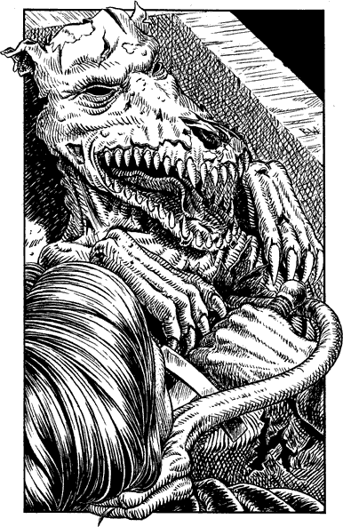

131
Using your Magnakai power of Nexus, and the strength of your own two hands, you force open the barred door and gain access to the anteroom beyond. It is unlit and every surface is thick with a dust that has lain undisturbed for many years. On a marble dais, which occupies most of the floor, there stands a large rectangular stone casket. It has no lid, and as you approach it you see that it contains the mummified remains of a creature you cannot readily identify.

You can feel no evil in the vicinity of this corpse, and your senses tell you that there is nothing, other than yourself, alive in this room. Confident in this knowledge you lean forward to examine the corpse.
Without warning, a powerful spike of psychic energy penetrates deep into your mind. Its icy cold attack numbs your senses and leaves you trembling helplessly with shock—lose 6 ENDURANCE points.
Reeling from the unexpected onslaught, you struggle to erect a mind shield as the mummified remains of the corpse slowly stir into life.
Suddenly, a claw-tipped limb snakes towards your throat and grabs you in a choking, vice-tight grip. Desperately you struggle to unsheathe a weapon and free yourself as the grisly remains of a Plague Agarashi rise up from the casket only inches before your disbelieving eyes.
Plague Agarashi (Undead/magically animated): COMBAT SKILL 46 ENDURANCE 36
Due to the speed and surprise of this creature’s attack, reduce your COMBAT SKILL by 3 for the duration of this fight. If you wield the Sommerswerd, remember to double the Undead Plague Agarashi’s ENDURANCE point loss in each round of combat.
If you win the combat, turn to 18.